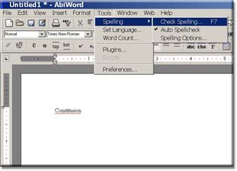
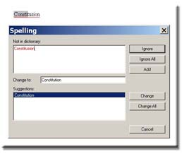

Now that you have opened your document and written you letter and saved it you are ready to use the spell check function to search for misspelled words.
Go to the "Tools" function on the menu bar.
Now select the word "Spelling" to search for misspelled words in your letter.

At this point a spell check box will open up with your misspelled word hi-lighted in red, and a suggestion box with options you can chose from to replace your misspelled word.

Click on one of the following options: "change, change all, ignore or ignore all".
If at any point during your spell check you decide to exit the spell check function simply click on the"Cancel" button.
You may also want to change your spell check options.
Select "Spelling Options" from the list and then change your setting options.